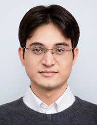
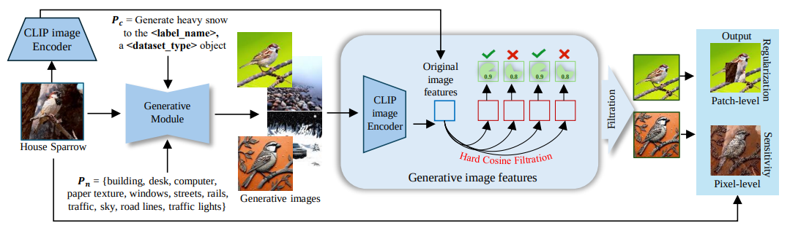
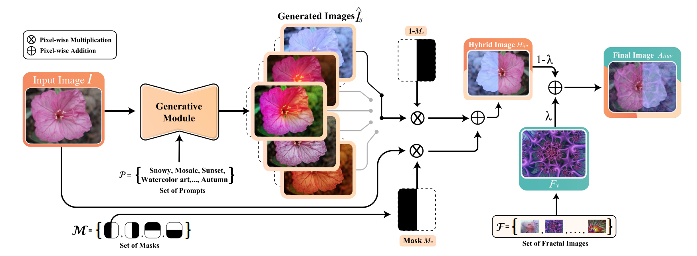
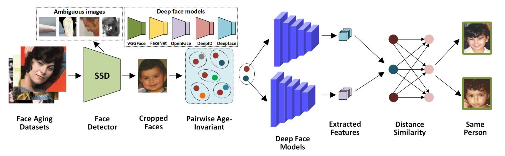
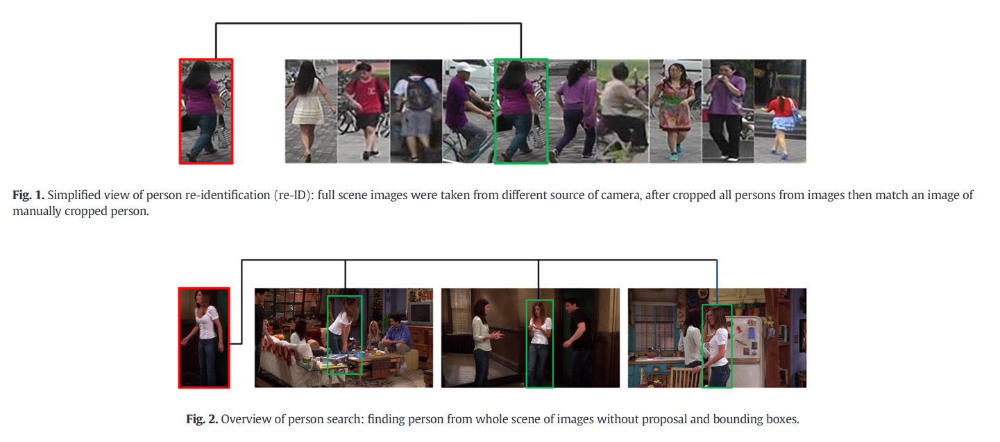

|  |
Khawar IslamChief Technology Officer (CTO) – Gen AI, Upendi.app, Seoul, South KoreaPrev: Senior Scientist – Autonomy AI, Neubility, Seoul, South Korea Prev: Research Scientist – AI, CoreMax Technology, Seoul, South Korea Email: khawarr[dot]islam[at]gmail[dot]com CV | Google Scholar | dblp | Github | Linkedin |
News
- 🚀 Joined Upendi.app as Chief Technology Officer (CTO) – Gen AI, leading diffusion-based generative systems, personalization, and production ML.
- 📄 Paper “Context-guided Responsible Data Augmentation with Diffusion Models” accepted at ICLR 2025 Workshop. [arXiv]
Currently, I am working as Chief Technology Officer (CTO) – Gen AI at Upendi.app, Seoul, South Korea. Previously, I worked as Senior Scientist – Autonomy AI at Neubility and Research Scientist – AI at CoreMax Technology, where my research focused on the generalization and robustness of neural networks, large language models for raw data, data augmentation, dataset construction, optical character recognition, adversarial attacks, and the development of next-generation personalized story diffusion, consistent character generation, image-to-image, and image-to-video translation.
I received my M.S in Computer Science and Engineering from Sejong University, Seoul. During my master's studies, I worked on image understanding and image reconstruction approaches, including introducing an image compression method at CVPRw. Additionally, I have attended several summer schools and served as a technical volunteer at top AI and ML conferences.
International Conferences
|  |
Context-guided Responsible Data Augmentation with Diffusion Models Khawar Islam, Naveed Akhtar International Conference on Learning Representations (ICLRw), 2025 [Paper] |
|  |
DiffuseMix: Label-Preserving Data Augmentation with Diffusion Models Khawar Islam, Muhammad Zaigham Zaheer, Arif Mahmood, Karthik Nandakumar IEEE Conference on Computer Vision and Pattern Recognition (CVPR), 2024 [Paper] [Supplementary] [Project Page] [Code] [Poster] [Dataset] [Video] |

|
Face Pyramid Vision Transformer Khawar Islam, Muhammad Zaigham Zaheer, Arif Mahmood British Machine Vision Conference (BMVC), 2022 [Paper] [Supplementary] [Project Page] [Code] [Poster] [Video] |

|
Image Compression with Recurrent Neural Network and Generalized Divisive Normalization Khawar Islam, Dang Lien Minh, Sujin Lee, Hyeonjoon Moon IEEE Conference on Computer Vision and Pattern Recognition Workshop (CVPRw), 2021 [Project Page] [Code] [CVF Open Access] [IEEE Xplore] |
|  |
Face Recognition Using Shallow Age-Invariant Data Khawar Islam, Sujin Lee, Dongil Han, Hyeonjoon Moon Image and Vision Computing New Zealand (IVCNZ), 2021 [PDF] [IEEE Xplore] |
International Journals
|  |
Person search: New paradigm of person re-identification: A survey and outlook of recent works Khawar Islam Journal of Image and Vision Computing (IMAVIS), 2020 [Paper] |
Awards & Honors
- NeurIPS Support, Sponsored by Naver Labs Europe, DeepMind, and Google AI, 2021
- Full Tuition Fee Waiver, School of Computer Engineering, Sejong University, 2020
- Prof. Stipend, CVPR Lab, Sejong University, 2020
- Conference Travel Grant, Ministry of Planning Commission, Pakistan, 2020
- Merit Scholarship for Bachelor Degree, Quaid-e-Azam Aligarh Society, Karachi, 2018
- Most Valuable Professional Award, C-SharpCorner, India, 2016 & 2017
Technical Skills
- IP Algorithms: Segmentation, Filter Design, Noise Removal, Compression, Super Resolution
- Object Detection: SSD, YOLO-NAS, YOLOX, Faster R-CNN, DETR, GroundingDINO, YOLOv8
- DL Techniques: Tracking, Optical Flow, Particle Filtering, Pose Estimation
- CV Algorithms: Image Classification and Detection, Tracking, Siamese Networks
- Software Control: JIRA, Agile, Scrum, GIT, Subversion
- Languages: Python, Keras, JAVA, Unix Shell Scripting
- Deployment: Docker, Kubernetes
- Editors: Visual Studio Code, PyCharm, Jupyter Notebook
- Operating Systems: WINDOWS 10, Ubuntu 18.04, Ubuntu 20.04, MAC OSX
- APIs: PyTorch, TensorFlow, Caffe, OpenCV, Flask, Django
Recent Research/Industrial Projects
- High-Quality Video Generation from Diffusion Models (Text-2-Video), 2024 - Present
Designed identity-specific prompts and fine-tuned models for video generation. - Image Restoration and Enhancement with GANs and Diffusion Models, 2024 - Present
Worked on image super-resolution, deblurring, in-painting, and debazing. - Image Editing Instructions with Diffusion Models (Image-to-Image), 2023
Integrated Imagic, SINE, and LEDITS for high-resolution image editing. - Foundation Multimodal Vision Language Models, 2023
Generated captions and evaluated models on various metrics. - Vision Language Models for Unseen Domains & Domain Shift, 2023
Fine-tuned models to improve robustness and performed experiments on multiple datasets. - Reliable Lightweight Real-Time Open-Vocabulary Object Detection, 2023
Investigated and fine-tuned models for state-of-the-art performance. - Online Continual Learning with Blurry Data and Incorrect Labels, 2022
Developed a framework for diversity and purity in memory updates. - Vision Transformer for General and Age-Invariant Face Recognition, 2021
Proposed a new ViT architecture and conducted experiments on face aging datasets.
Academic Activities
- Academic Services
- Technical Volunteer - Advances in Neural Information Processing Systems (NeurIPS) 2021.
- Technical Volunteer - International Joint Conferences on Artificial Intelligence (IJCAI) 2021.
- Technical Volunteer - International Conference on Machine Learning (ICML) 2021.
- Technical Volunteer - International Conference on Learning Representations (ICLR) 2021
- Student Volunteer - IEEE Conference on Computer Vision and Pattern Recognition (CVPR) 2021
- Technical Volunteer - Association for the Advancement of Artificial Intelligence (AAAI) 2021
- Reviewer (International Journal)
- IEEE Transactions on Pattern Analysis and Machine Intelligence (TPAMI).
- International Journal of Computer Vision (IJCV).
- Computer Vision and Image Understanding (CVIU).
- Reviewer (International Conference)
- IEEE Conference on Computer Vision and Pattern Recognition (CVPR) 2019-2023.
- IEEE International Conference on Computer Vision (ICCV) 2019-2023.
- European Conference on Computer Vision (ECCV) 2020-2022.
- Conference on Neural Information Processing Systems (NeurIPS) 2020-2022.
- International Conference on Machine Learning (ICML) 2020-2023.
- International Conference on Learning Representations (ICLR) 2021-2023.
- Association for the Advancement of Artificial Intelligence (AAAI) 2020-2023.
- IEEE Winter Conference on Applications of Computer Vision (WACV), 2020.
- Moderator
- AI Deep Group on Facebook, 23.1K Members.
- Artificial Intelligence, Machine and Deep learning Group, 754.4K members.
- Deep Learning and Machine Learning, 109.5K Members.
- Thailand Deep Learning, 19.8K Members.
- Computer Vision, 129.6K Members.
- Computer Vision and Machine Learning, 17.5K Members.
Summer and Winter Schools
- OxML School, Oxford Machine Learning Summer School, 2022
- NYU AI School, New York Artificial Intelligence School, USA, 2022
- MLSS, Machine Learning Summer School, Taipei, Taiwan, 2021
- EEML, Eastern European Machine Learning Summer School, 2021
Q/A Mentorship Sessions
- Yingzhen Li, Mentor at ICML, Imperial College London
- Evan Shelhamer, Mentor at ICML, DeepMind, Google
- Wei-Lun (Harry) Chao, Mentor at ICLR, Ohio State University
- Shakir Mohamed, Mentor at ICLR, DeepMind, Google
- Emmanuel Kahembwe, Mentor at ICLR, VDE (UK & Ireland)
The design is taken from Prof. Sunghoon Im, DGIST.